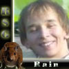
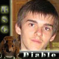
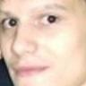

RSG King of the hill
Приветствую всех посетителей нашего портала. Сегодня 18-го ноября, наконецто воплотится в жизнь старая и давно рекламировавшаяся задумка о проведении своеобразного кланового турнира. Правда турниром соревнование 4х игроков назвать трудно. Скорее мы увидим три интересных шоу матча между одними из сильнейших игроков нашей команды. Итак вашему вниманию предлагается старт проекта King of the hill by clan RSG или, если проще, король горы...
В первом этапе данного ивента сразятся 4 возможно не самых сильных, но вероятно самых активных и самых заслуженных игроков нашей команды. НАпомню, что система проведения single elimination в результате которой и останется тот единственный победитель который и получит статус чемпиона ( ) первого внутрикланового турнира. Защиту титула новоявленный чемпион должен будет через две недели против претендента, которого определит квалификационный матч. А пока до старта ивента остается еще немного времени, давайте познакомимся с участниками сегодняшнего события:
) первого внутрикланового турнира. Защиту титула новоявленный чемпион должен будет через две недели против претендента, которого определит квалификационный матч. А пока до старта ивента остается еще немного времени, давайте познакомимся с участниками сегодняшнего события:
1/2 финала

--[2:1]--

Опыт против молодости. Именно так можно охарактеризовать этот матч. Некогда наводивший ужас на своих оппонентов орк Фист, между прочим топ-3 ВЦГ Харьков 2005, отметивший в этом году свой двадцатый день рождения будет проверять на прочность молодого, но уже амбициозного и довольно быстро прогрессирующего Рейна, который младше его аж на 5 лет и в копилке которого нет никаких сколь нибудь значимых достижений. Чтож, посмотрим что из этого выйдет, но матч обещает быть крайне любопытным.
Итак, сейчас 20:15 по киевскому времени и шоу матчи начались.
Первой картой в данномпротивостоянии будет играться удобная орку СВ.На данный момент игры уже начались и мы с интересом следим за их развитием. Рейн играет в новомодню и довольно рискованную страту с первым героем кипером и медведями. Опытный Фист играет стандартно и пока переигрывает соперника почти по всем параметрам. Игра идет к своему завершению у орка ставится эксп и есть хай лвл герои... Как и следовало ожидать Фист доводит игру до победы, правда окончание выдалось весьма непростым. Вторую карту (EI) Фист вроде бы играл даже более уверенно, но в итоге масс медведи все таки зарешали. Сейчас начнется третья карта именно она и определит второго финалиста "короля горы".
В итоге на третьей карте LT Фист вивернами все же доводит игру до победы и вырывает матч 2-1. Теперь нас ждет финал, который и определит "короля горы" на сегодня

--[2:0]--
У данного матча практически такая же интрига, как и у первого. Молодой, но уже очень опытный, проверенный во многих сложных играх и чемпионатах Диабло будет проверять на прочность игрока, ни разу не игравшего за основу нашей команды на кв, но стабильно показывающего неплоие результаты. Данный матч может стать так же моментом истины для самого Диабло, который находится явно не в лучшей форме, но стремящегося вернуться на верхние позиции в клановой табели о рангах. Ожидается интереснейший матч, следите за обновлениями.
Без как их либо затруднений Диабло побеждает Лексуса 2-0 (EI, TS) в очень короткие сроки и теперь ждет победителя пары Фист против Рейна.
финал
--[1:0]--
Финал, который должен был проходить по системе bo5 выдался коротким. Первая карта СВ, Фист с блейдмастером начал очень удачно, смог добить большого гнола и элема. Диабло крипится до второго уровня и приходит с застройкой. И хотя Диабло и убивает Блейдмастера и боров, но Фист все же минусует СЛИШКОМ много рабов. вышедший блейдмастер отбивает застройку. Дальше игра шла исключительно для формальности. Герои 3-3 потив второго архимага легко решают армию хумана. Диабло выходит и поздравив Фиста с победой говорит, что не собирается играть дальше. Итак, Фист
, становится первым чемпионом (
) турнира King of the hill. Первая защита у новоявленного чемпиона состоится через две недели против еще не определенного претендента. А пока поздравимнашего орка. Демопак Фиста с этого ивента также уже есть у нас на сайте.